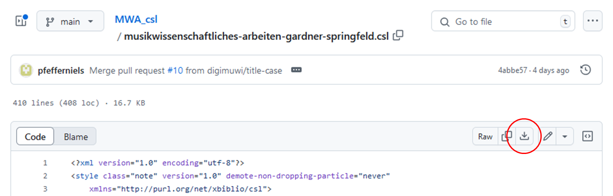
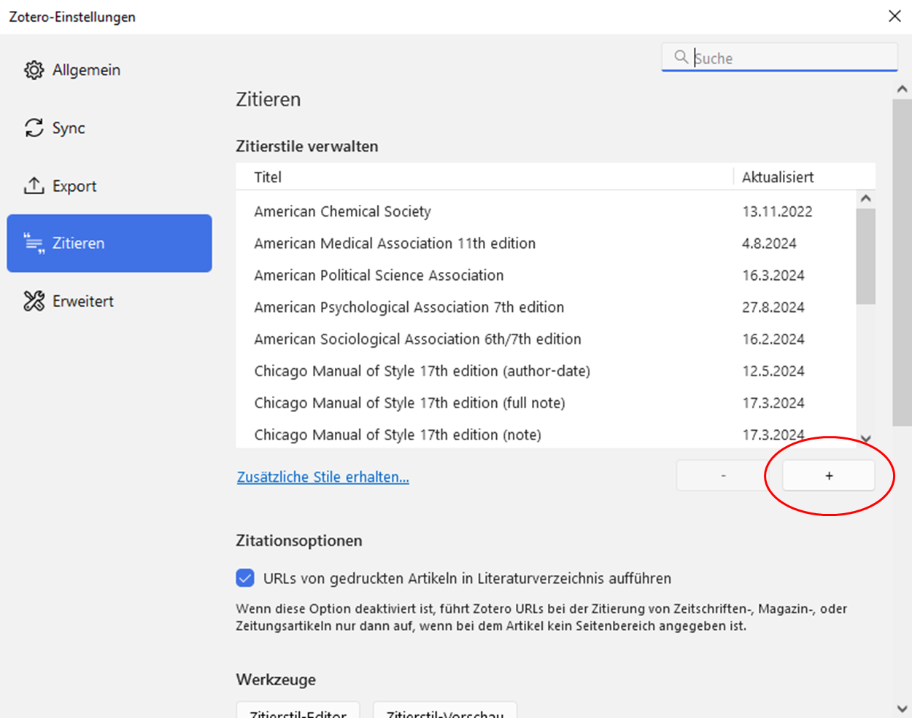

How To Zotero: Gardner/Springfeld-CSL
Niels Pfeffer, Thomas Hua, letzte Änderung am 30. November 2024.
1 Einleitung
1.1 Hinweise zu diesem Dokument
Zur Form
Dieses Dokument liegt in einer hybriden Form vor. TODO: links
Zur Sprachverwendung
In diesem Dokument wird das generische Maskulinum verwendet, um alle Geschlechter anzusprechen. Begriffe wie “Autor” oder “Herausgeber” sind damit als geschlechterneutral zu verstehen. Die hier gewählte Form wird in Anlehnung an die aktuellste deutschsprachige Zotero-Version und den zugrunde liegenden Text1 der Gardner/Springfeld-CSL verwendet.
Diese Entscheidung ist nicht als wertend zu deuten (für Interessierte liefert Philipp Hübl eine umfassende Diskussion zum Thema in seiner Vorlesung Bullshit-Resistenz).
Ein Wegweiser
Besonders empfiehlt sich das Lesen des Kapitels Häufige Probleme. Eine relativ knappe übersicht des
2 Guide
2.1 Wie installiere ich das Gardner/Springfeld-Zitierschema?
In diesem Guide wird davon ausgegangen, dass bei Sie das Literaturverwaltungsprogramm Zotero bereits installiert haben. Sollte das nicht der Fall sein, finden Sie eine kleine Anleitung dazu auf der Zotero-Homepage.
In Zotero werden Zitierstile mit .csl-Dateien definiert.
Die aktuellste Version der Gardner/Springfeld-CSL finden Sie im
offiziellen GitHub-Repository unter musikwissenschaftliches-arbeiten-gardner-springfeld.csl.
Dort können Sie mit einem Klick auf den Downloadknopf die Datei
herunterladen.

.csl-Datei und öffnen Sie diese.

2.2 Wie lege ich eine neue Literatur an?
Um einen eine Literatur einzutragen, finden Sie zuer
2.2.1 Wie erkenne ich, um welche Publikationsform es sich handelt?
2.2.2 Wie erstelle ich einen neuen Eintrag?
2.2.3 Wie kann ich Literatur automatisch importieren?
Es ist wichtig jede automatische Publikation anhand
2.2.4 Häufige Probleme
2.3 Wie binde ich ein Zitat extern ein?
3 Der Gardner/Springfeld-Standard
3.1 Allgemeine Regeln
3.2 Selbstständige Publikationen
3.3 Unselbstständige Publikationen: Aufsätze, Artikel, kleinere Beiträge
3.4 Internetinhalte
3.5 Noten
3.6 Aufnahmen
Matthew Gardner und Sara Springfeld, Leitfaden für bibliografische Angaben, in: Musikwissenschaftlichen Arbeiten. Eine Einführung, Kassel 2014.↩︎